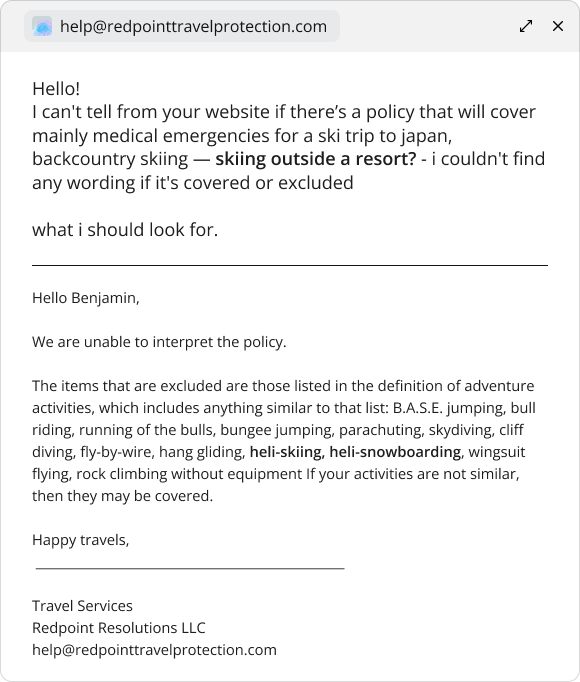

Soventure / Case study
A policy for the trip
you’re actually taking.
- Role
- Senior UX Designer
- Period
- 2023–2026
- Product
- Consumer travel-insurance marketplace
- Reach
- Travelers comparing and purchasing coverage
- Team
- Senior UX Designer · Graphic Designer · Insurance Specialist · Front-End Developer
I launched Soventure’s travel-insurance marketplace, leading the UX and product design work to help travelers compare plans and understand what their trip would actually be covered for.
Learning to design for consumer behavior
My first deep dive into
B2C and e-commerce.
Most of my earlier work had been for people using a product as part of their job. At Soventure, I was designing for someone planning a trip and deciding what to buy. It was my first deep dive into B2C and e-commerce, with a different set of habits to understand.
I spent more time with funnels, session recordings, A/B tests, and customer feedback. Each gave me part of the story. A drop in the funnel could tell me where to look; a conversation could help explain what I was seeing. I also investigated site speed and the wait for quotes, using Datadog to identify backend delays and SpeedLab to understand the performance customers experienced in the browser. Connecting those findings helped me treat technical friction as part of the overall customer journey.
Why coverage felt uncertain
In interviews, the question became more specific. Travelers wanted to know whether a policy would cover the reason they might actually make a claim. A large benefit amount couldn’t answer that on its own.
Testing where the quote journey starts
We A/B tested two ways to start a quote: a form embedded on the homepage, and a homepage that led to a dedicated quote-form page. Our hypothesis was that putting the form on the homepage would increase overall conversion by removing an extra step.
The results challenged that assumption. The version with the quote form on the second page performed noticeably better in overall conversion. Fewer steps did not automatically mean a more effective journey; the test gave us evidence to keep the form on its own page.


Painpoint
Travel plans are specific. Insurance summaries can be frustratingly general. Travelers needed to understand which cancellation reasons and activities a policy covered before they could judge whether it suited their trip.
Email exchange about backcountry and heli-skiing coverage.What research revealed
Medical coverage and trip cancellation mattered, but simply displaying a cancellation benefit wasn’t enough. Travelers wanted to understand which reasons for cancellation were actually covered. Activity coverage was another key consideration. Benefits such as baggage delay carried less weight in the decision.

Making plans easier to compare
Comparing Squaremouth and TravelInsurance.com with Soventure highlighted how much the structure of a results card matters. Dense lists require travelers to read each plan line by line; a consistent, labeled grid lets them find the same benefit in the same place across plans.
Soventure’s cards give coverage limits fixed positions and keep the plan name and total price visually distinct. Category tags explain what makes a plan different, while ratings and review counts provide trust signals. Benefit-based filters help travelers narrow the results before comparing the details.

What changed
The results experience had a higher conversion rate than the comparable InsureMyTrip experience. In interviews, participants expressed more confidence that they would be covered when buying a plan here.

The important distinction: having cancellation coverage versus understanding which reasons are covered.
What I learned
How I learned to design
for consumer behavior.
I became more careful about what a number could tell me. Analytics helped locate a problem; interviews and recordings helped me understand it. The useful work happened when I brought those accounts together.
At Soventure, that led back to the traveler’s actual trip: what they planned to do, what worried them, and what they needed to know before buying. It also taught me to be more selective about the questions we asked along the way.
I also learned to accept tradeoffs. Insurance providers had requirements we needed to accommodate, and retrieving their quote data took time. I had to balance those needs with an experience that felt responsive to travelers. That meant weighing what we asked people to do, how much information we presented, and how the wait for results felt. A decision could satisfy a provider and still make the site feel sluggish; both sides needed attention.